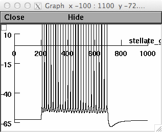

This code accompanies the publication: Schmidt-Hieber C, Hausser M (2013) Cellular mechanisms of spatial navigation in the medial entorhinal cortex. Nat Neurosci 16:325--331 Send comments to c.schmidt-hieber_at_ucl.ac.uk Currently, only the compartmental stellate cell model [1] is included. I will add the oi and can model implementations at a later time. INSTALLATION Install NEURON, ideally with Python support: http://www.neuron.yale.edu USAGE 1. Compile the mechanism files in the mod directory: $ nrnivmodl nrn/mod 2. Run the demo: $ ./x86_64/special demo/test_rin.hoc - or $ python demo/test_rin.py The demo runs with 11 injected current pulses from -0.05 to .45 nA in steps of 0.05. When the demo is finished (takes a few seconds) you should have a graph that looks like this:  [1] Morphology based on: D. L. Garden, P. D. Dodson, C. O'Donnell, M. D. White, M. F. Nolan Tuning of synaptic integration in the medial entorhinal cortex to the organization of grid cell firing fields. Neuron 60, 875 (2008).